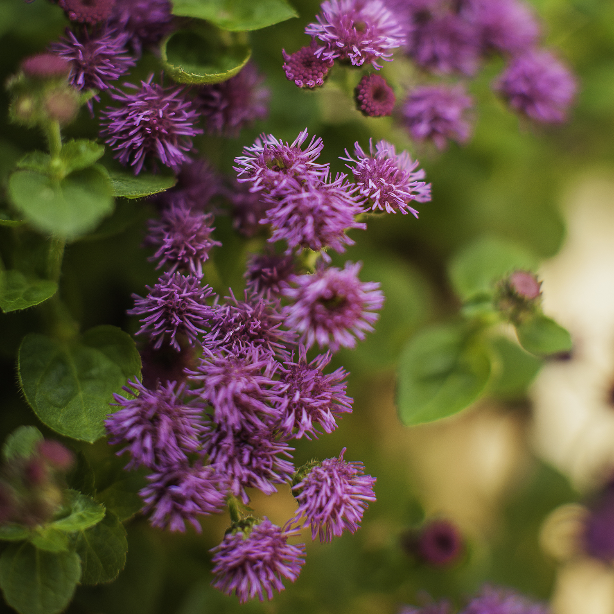
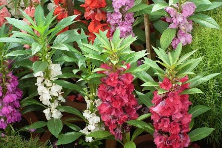

Aconite
Aconite - is a plant that's native to many areas of Europe and Asia. Its stalks are loaded with purple flowers, so it's an appealing perennial plant for ornamental gardens. Each blossom is shaped like the hood of a medieval monk.Aconites are one of the first bulb flowers to bloom in the spring and are known for their cheerful yellow color. Plant Aconites in a large group together and you'll be able to smell their sweet, honey-like fragrance.
Ageratum
Ageratum - is a genus of 40 to 60 tropical and warm temperate flowering annuals and perennials from the family Asteraceae, tribe Eupatorieae. post species are native to Central America and Mexico but four are native to the United States. They form tussocks or small hills. They grow to a height of 30 in.
Allium
Allium-is a genus of monocotyledonous flowering plants that includes hundreds of species, including the cultivated onion, garlic, scallion, shallot, leek, and chives. The generic name Allium is the Latin word for garlic, and the type species for the genus is Allium sativum which means "cultivated garlic.
Ballon Flower
Balloon Flower - Platycodon grandiflorus is a species of herbaceous flowering perennial plant of the family Campanulaceae, and the only member of the genus Platycodon. It is native to East Asia. It is commonly known as balloon flower, Chinese bellflower, or platycodon.
Balsam
Balsam -Impatiens balsamina, commonly known as balsam, garden balsam, rose balsam, touch-me-not or spotted snapweed, is a species of plant native to India and Myanmar. It is an annual plant growing to 20–75 cm tall, with a thick, but soft stem.
Bloodroot
Bloodroot -Sanguinaria canadensis is a perennial, herbaceous flowering plant native to eastern North America. It is the only species in the genus Sanguinaria, included in the family Papaveraceae, and most closely related to Eomecon of eastern Asia.
Caladium
Caladium - is a genus of flowering plants in the family Araceae. They are often known by the common name elephant ear, heart of Jesus, and angel wings. There are over 1000 named cultivars of Caladium bicolor from the original South American plant.
Calendula
Calendula - The flower is used to make medicine. Calendula flower is used to prevent muscle spasms, start menstrual periods, and reduce fever. It is also used for treating sore throat and mouth, menstrual cramps, cancer, and stomach and duodenal ulcers.
Carnation
Carnation - Dianthus caryophyllus, commonly known as the carnation or clove pink, is a species of Dianthus. It is probably native to the Mediterranean region but its exact range is unknown due to extensive cultivation for the last 2,000 years.
Delphiniums
Delphiniums - Also commonly known as "larkspur," the Delphinium is highly toxic to both humans and animals. While dangerous to eat, Delphinium's tall, bell-like blooms and tall stems make for beautiful additions to gardens or cut for bouquets. Delphinium is a genus of about 300 species of perennial flowering plants in the family Ranunculaceae, native throughout the Northern Hemisphere and also on the high mountains of tropical Africa.
Diascia
The low growing Diascia makes for a great filler in outdoor containers, hanging baskets, window boxes and indoor pots. They are also relatively easy to grow, requiring only full sun and cool weather.
Dusty Miller
This hardy drought and frost tolerant plant makes for an ideal filler for outdoor containers and gardens. Its silver-grey foliage provides a nice backdrop to any bolder colored blooms.
Epimedium
With green foliage and pink, yellow or purple flowers, the Epimedium makes for good groundcover in shady, moist gardens. As the seasons progress, their green leaves can have tints of bronze, copper and red.
Evergreen Candytft
Know for its small, cloud-like blooms, this sun-loving flower makes for a great addition to rock gardens. Often cascading over rocks or walls, the Evergreen Candytuft is ideal for a filler in containers or to act as a border.
Fountain Grass
This ornamental grass shows off flowy, plumed flowerheads and provide a unique contrast to any garden. They are most commonly found in white, but for more of a "wow" factor, look for shades of red, violet and pink.
Foxglove
This elegant flower requires a bit of patience, as it typically takes two seasons before its iconic blooms appear. But the wait is worth the payoff and the hardy Foxglove can handle a wide range of sun and soil types.
Gaura
The elegant Gaura features dainty white or pink blooms. Thriving in a variety of soil types, the Gaura is known to quickly take over gardens and be difficult to trim down—so don't let your garden go unmanaged for too long!